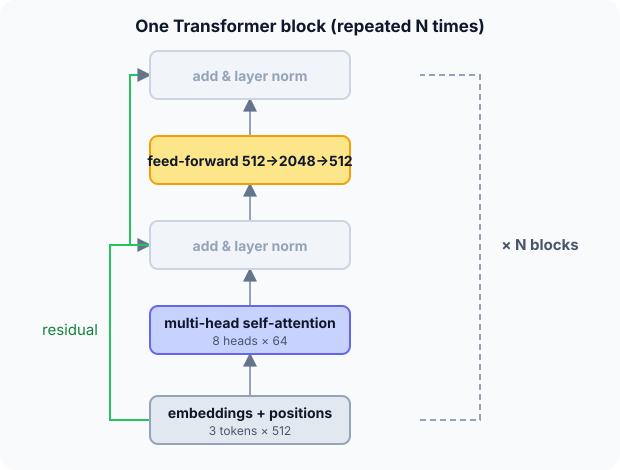

Prerequisites
- Attention (Q, K, V).
- Dense layers.
- Normalization (layer norm is the same idea per token).
The analogy
Everyday analogy
Imagine a round-table meeting. In each round, every participant listens to everyone else (attention), then thinks quietly on their own (feed-forward), and keeps a copy of their previous notes (residual connection). After many rounds, everyone's notes reflect the whole discussion.
Each Transformer block is one such round, applied to every token at the same time.
How it works
One block: $x \leftarrow \text{LayerNorm}(x + \text{MultiHeadAttention}(x))$, then $x \leftarrow \text{LayerNorm}(x + \text{FFN}(x))$, with $\text{FFN}(x) = W_2\,\text{ReLU}(W_1 x + b_1) + b_2$. Positions are added to the input embeddings first.
Start with the sizes of one block
Use the original settings: $d_{\text{model}} = 512$, 8 attention heads, feed-forward size $d_{\text{ff}} = 2048$. Predict, then open "Check".
Example: predict before you read
Step 1. Each head works in a smaller space. What is the size per head, $d_k$?
Check
$512/8 = 64$.
Step 2. Cover the next line and guess: the attention weights. There are four $512 \times 512$ matrices ($W_Q$, $W_K$, $W_V$, $W_O$).
Check
$4 \cdot 512^2 = 1{,}048{,}576$ weights (plus biases).
Step 3. The feed-forward network: $512 \to 2048 \to 512$. Predict its weights and the block total.
Check
$2 \cdot 512 \cdot 2048 = 2{,}097{,}152$. Block total $\approx 3.15$ million (plus biases and norm parameters).

Quick recall: Before reading further, cover the text above and say out loud: what are the two sub-layers of a Transformer block?
Check your answer
Multi-head self-attention and a position-wise feed-forward network, each wrapped in a residual connection and layer normalization.
Finish the picture: positions
The original Transformer adds sinusoidal position encodings: $PE(pos, 2i) = \sin(pos/10000^{2i/d})$, $PE(pos, 2i+1) = \cos(\cdot)$.
- Position 1, dimensions 0 and 1 ($i = 0$). Predict the two values.
Check
$\sin(1) \approx 0.841$ and $\cos(1) \approx 0.540$.
- Position 0. Predict the encoding for dimensions 0 and 1.
Check
$\sin 0 = 0$ and $\cos 0 = 1$. Every position gets a unique pattern of waves of different frequencies.
Quick recall: Without scrolling up, say out loud: why does a Transformer need positional encodings?
Check your answer
Self-attention treats its inputs as a set; without position information "dog bites man" and "man bites dog" would look the same.
Full worked calculation
The numbers inside a Transformer: positional encodings for the first positions, a causal mask on "the cat sat", and a full parameter count for one block with $d = 512$, $d_{ff} = 2048$ (the original base model).
| Part of one block | Formula | Parameters |
|---|---|---|
| Attention: $W_Q, W_K, W_V, W_O$ | $4 d^2$ | 1,048,576 |
| Feed-forward: $d \to d_{ff} \to d$ | $2\, d\, d_{ff}$ | 2,097,152 |
| One block (weights only) | 3,145,728 | |
| 6 blocks | 18,874,368 |
-
1Positional encoding
$$PE(\text{pos}, 2i) = \sin\frac{\text{pos}}{10000^{2i/d}}, \quad PE(\text{pos}, 2i + 1) = \cos\frac{\text{pos}}{10000^{2i/d}}$$Attention by itself does not know word order. Each position gets a unique pattern of sines and cosines, added to the word's embedding.
-
2Values for "cat" (position 1)
$$\text{dims } 0, 1: \; \sin 1 = 0.841, \; \cos 1 = 0.540; \qquad \text{dims } 2, 3: \; \sin\frac{1}{1.037} = 0.822, \; \cos = 0.570$$Position 0 is $[0, 1, 0, 1, \ldots]$, position 2 starts $[0.909, -0.416, \ldots]$. Low dimensions change fast with position, high dimensions slowly, like the hands of a clock.
-
3Causal mask on the scores
$$\begin{bmatrix} 1 & -\infty & -\infty \\ 0.5 & 1 & -\infty \\ 1 & 0.5 & 2 \end{bmatrix}$$In a decoder (like GPT), a word may only look at itself and earlier words. Scores for future positions are set to $-\infty$ before the softmax.
-
4Softmax row by row
$$\text{"the": } [1, 0, 0], \quad \text{"cat": } \frac{[e^{0.5}, e^{1}]}{e^{0.5} + e^{1}} = [0.378, 0.622, 0], \quad \text{"sat": } [0.231, 0.140, 0.629]$$$e^{-\infty} = 0$, so future words get exactly zero weight. "the" can only attend to itself; "sat" sees all three.
-
5Parameters of attention
$$4 \cdot 512^2 = 4 \cdot 262{,}144 = 1{,}048{,}576$$Four $d \times d$ matrices: query, key, value projections, and the output projection that merges the heads. Splitting into 8 heads of size 64 does not change this count.
-
6Parameters of the feed-forward network
$$512 \cdot 2048 + 2048 \cdot 512 = 2{,}097{,}152$$Applied to every token separately, it expands to 2048 dimensions and back. It holds two thirds of the block's weights.
-
7Whole encoder
$$6 \times 3{,}145{,}728 \approx 18.9 \text{ million}$$Add the embeddings (vocabulary × 512) and small extras (biases, layer-norm $\gamma, \beta$) to reach the full model size. GPT-style models scale the same formula with more layers and larger $d$.
What the numbers tell us
A Transformer block = multi-head attention ($4d^2$ weights) + feed-forward ($2 d\, d_{ff}$), each wrapped in add & norm. Position comes from added sine/cosine patterns.
The causal mask (setting future scores to $-\infty$) is the only difference between an encoder's attention and a text generator's attention.
The rule in plain words
Embed the tokens and add positional encodings. Then repeat $N$ blocks: multi-head self-attention → add & norm → feed-forward → add & norm.
Encoders (BERT) let every token attend to all others; decoders (GPT) mask future tokens so each position only sees the past, and predict the next token.
Quick recall: Before you read the code, describe the sinusoidal positional encoding in your own words. Then check below.
Check your answer
For each position and each pair of dimensions, compute a sine and a cosine of the position divided by a frequency that shrinks along the dimensions; add these to the token embeddings.
The code
Read this code after you have sized the block by hand. It will make more sense.
double pos_encoding(int pos, int dim, int d_model) { /* sinusoidal PE */
int i = dim / 2;
double angle = pos / pow(10000, (2.0 * i) / d_model);
return dim % 2 == 0 ? sin(angle) : cos(angle);
}long block_params(long d, long d_ff) { /* weights only, no biases */
return 4 * d * d + 2 * d * d_ff; /* attention + feed-forward */
}Definition
What you just did, in one line: a Transformer is a stack of blocks, each made of multi-head self-attention and a position-wise feed-forward network with residual connections and layer normalization, applied to token embeddings plus positional encodings.
flowchart TD
T["tokens"] --> E["embeddings + positional encoding"]
E --> A["multi-head self-attention"]
A --> N1["add & norm"]
N1 --> F["feed-forward (per token)"]
F --> N2["add & norm"]
N2 -->|"repeat N times"| A
N2 --> O["output: next-token probabilities (decoder) or features (encoder)"]
How costly is it?
Quick recall: Before looking at the formula, predict: does a Transformer's parameter count depend on the sentence length?
Check your answer
No: the same weights are applied to every position (except for learned position tables in some models).
Per block, the weights and the attention cost for a sequence of $n$ tokens:
$$\#\text{weights} = \underbrace{4 d^2}_{\text{attention}} + \underbrace{2 d\, d_{\text{ff}}}_{\text{FFN}} = 4 \cdot 512^2 + 2 \cdot 512 \cdot 2048 \approx 3.15\text{M}, \qquad \text{attention cost } O(n^2 d)$$| Setting | Value | Consequence |
|---|---|---|
| $d_{\text{model}}$ | 512 | Size of every token vector |
| Heads | 8 | $d_k = 64$ per head |
| $d_{\text{ff}}$ | 2048 | FFN holds 2/3 of the block's weights |
| Blocks | 6 (original) | ≈ 19M weights in the encoder stack |
| Sequence length $n$ | any | Attention cost grows as $n^2$ |
Warning
Without the residual connections and layer normalization, deep stacks of attention layers are very hard to train. They aren't decoration: every modern Transformer keeps them (often with the norm moved before each sub-layer, "pre-norm").
Exam tip
Draw one block bottom-up and name every part. Know $d_k = d_{\text{model}}/h$, the $4d^2 + 2d\,d_{\text{ff}}$ parameter count, and the difference between encoder (BERT) and decoder (GPT) attention masks.
Common mistakes
- Forgetting positional encodings, so word order is lost.
- Thinking the feed-forward layer mixes tokens; it is applied to each token separately.
- Confusing encoder (bidirectional) and decoder (causal, masked) attention.
Try it yourself
Exercise 1 (warm-up)
A model has $d_{\text{model}} = 768$ and 12 heads. What is $d_k$?
Hint
Divide.
Answer
$768/12 = 64$.
Exercise 2 (a bit harder)
Estimate the weights of one block with $d = 768$ and $d_{\text{ff}} = 3072$, and of 12 such blocks. (BERT-base has about 110 million parameters in total.) Write your answer down before you open it.
Show answer
Attention $4 \cdot 768^2 \approx 2.36$M; FFN $2 \cdot 768 \cdot 3072 \approx 4.72$M; block ≈ 7.1M; 12 blocks ≈ 85M. The rest of BERT's 110M is mostly the token embedding table.
Did you know?
Did you know?
The Transformer was introduced in 2017 by eight Google researchers in "Attention Is All You Need", originally for machine translation.
The same block is used for text (GPT, BERT), images (Vision Transformers cut images into patches as "tokens"), audio and protein structure prediction.
Key points to remember
If you remember one thing from each line, remember the because.
- Transformers process tokens in parallel because attention compares all positions at once instead of stepping through them.
- Positional encodings are needed because attention by itself ignores order.
- Residual connections make depth trainable because each sub-layer only adds a refinement to its input.
- A block has $4d^2 + 2d\,d_{\text{ff}}$ weights because attention uses four $d \times d$ matrices and the FFN two $d \times d_{\text{ff}}$ ones.
- GPT can generate text because causal masking trains each position to predict the next token from the past only.
Self-check questions
Answer these in order, out loud. They follow the page, so your answers become the script of your video.
- How is a Transformer block like a round-table meeting?
Sample answer
Each participant listens to everyone (attention), then thinks alone (feed-forward), keeping their previous notes (residuals); many rounds give a shared understanding.
- Size one block with $d_{\text{model}} = 512$, 8 heads, $d_{\text{ff}} = 2048$.
Sample answer
$d_k = 64$; attention $4 \cdot 512^2 \approx 1.05$M weights; FFN $\approx 2.10$M; total $\approx 3.15$M.
- Why does
pos_encodingusesinfor even dimensions andcosfor odd ones?A good answer mentions unique patterns.
Sample answer
Each pair of dimensions encodes the position as a point on a circle at one frequency; using both sine and cosine makes each position's pattern unique and lets relative positions be expressed as rotations.
- So what is a Transformer, in one sentence?
Sample answer
A stack of blocks of multi-head self-attention and per-token feed-forward layers, with residual connections and normalization, applied to embeddings plus positions.
- Why can Transformers be trained faster than RNNs on long texts?
A good answer mentions parallelism.
Sample answer
All positions are processed at once with matrix multiplications, instead of one step after another as in an RNN.
- How many weights does one block have, in terms of $d$ and $d_{\text{ff}}$?
Sample answer
$4d^2 + 2d\,d_{\text{ff}}$ (ignoring biases and normalization parameters).
- What is the difference between an encoder and a decoder Transformer?
Sample answer
Encoder tokens attend to the whole sequence (BERT); decoder tokens only attend to earlier positions through a causal mask and predict the next token (GPT).
- If you had to teach this to a friend in 2 minutes, what would you leave out, and why?
Sample answer
I'd leave out the parameter formula and positional-encoding maths. I'd keep the round-table analogy, the block diagram, and "attention + feed-forward + residuals, stacked; positions added; GPT predicts the next word".
External resources
- Jay Alammar: The Illustrated Transformer: the most popular visual walkthrough.
- Harvard NLP: The Annotated Transformer: the paper with working code, line by line.
- Vaswani et al.: Attention Is All You Need: the original paper.
- PyTorch docs: nn.Transformer: the module and its parameters.
Videos
- 3Blue1Brown: Transformers, the tech behind LLMs: a visual tour of a GPT-style Transformer.